Designing a comprehensive design system and SaaS platform for Blacksmith's Know Your Customer product — used by global banking institutions including ING Bank.
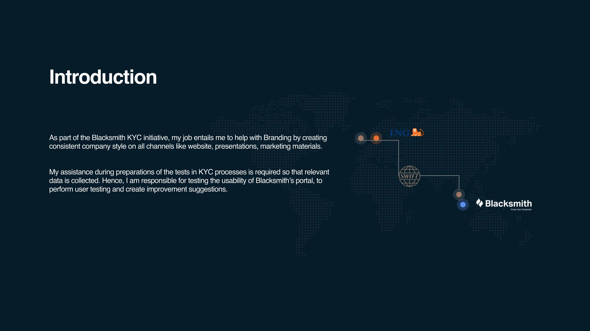
Blacksmith KYC is a SaaS platform that helps global banks streamline their Know Your Customer compliance process. As part of the initiative, I was embedded in the product team to help establish a consistent brand identity across all channels — website, presentations, and marketing materials.
Beyond branding, I assisted in preparing and testing the KYC processes within Blacksmith's portal. This involved conducting usability testing, identifying friction points in the user journey, and creating structured improvement suggestions to elevate the overall experience for banking compliance officers.
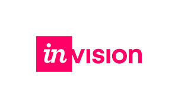
InVisionI established the Figma workspace to ensure designs were well organised, complete, and up to date. This created a shared foundation for the team to collaborate, view, and edit screens together — following the Blacksmith Design System's principles of User First, Consistency, and Efficiency.
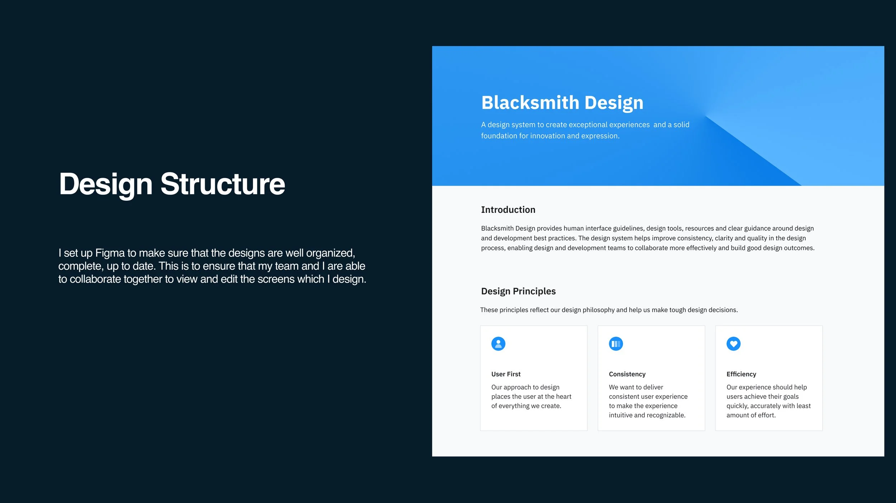
Blacksmith's visual identity is anchored by a primary blue (#1890FF) with a neutral palette for UI surfaces. Typography and color guidelines ensure accessibility and brand consistency across the platform at every touchpoint.
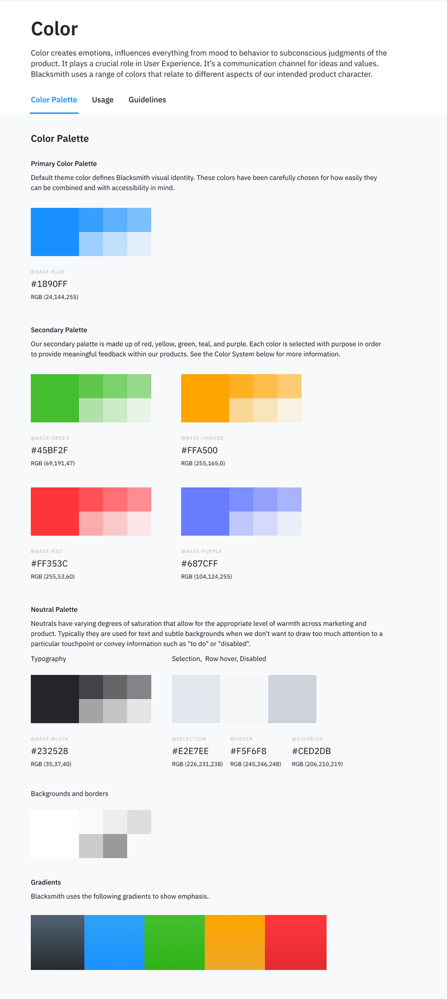
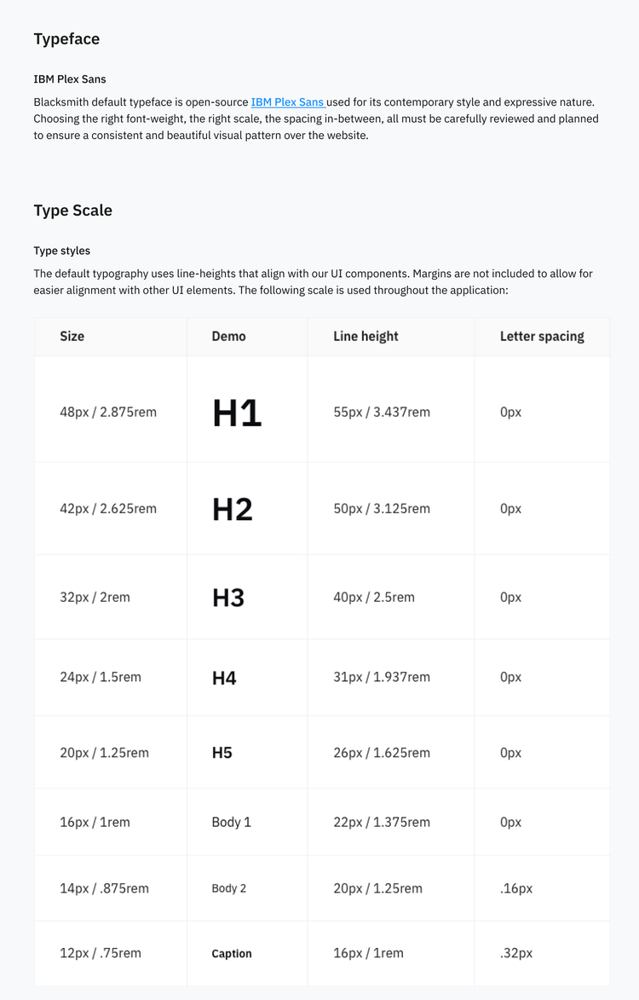
I designed and documented a comprehensive component library covering all core interaction patterns — buttons, form inputs, select dropdowns, accordions, banners, and toast notifications. Each component was designed with usage guidelines and variant states.
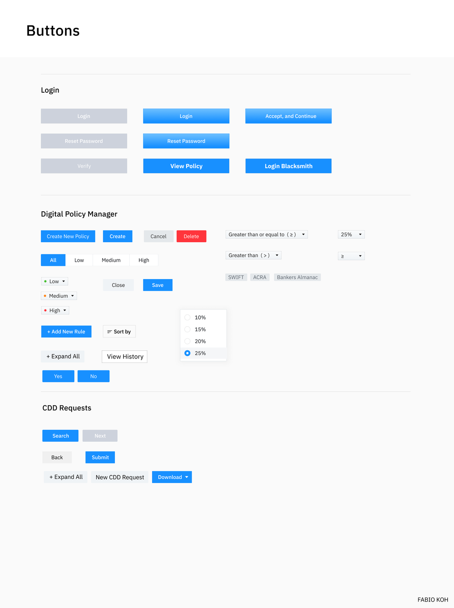
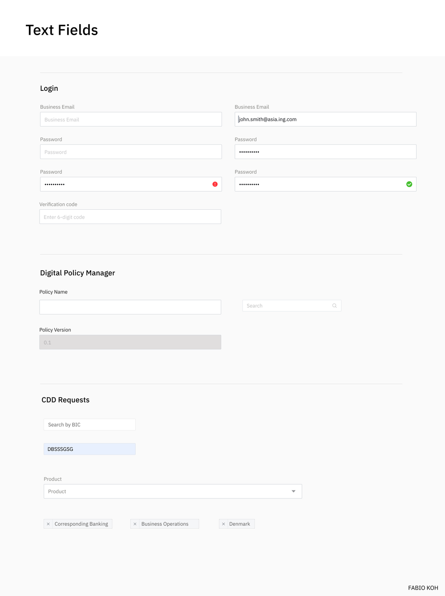
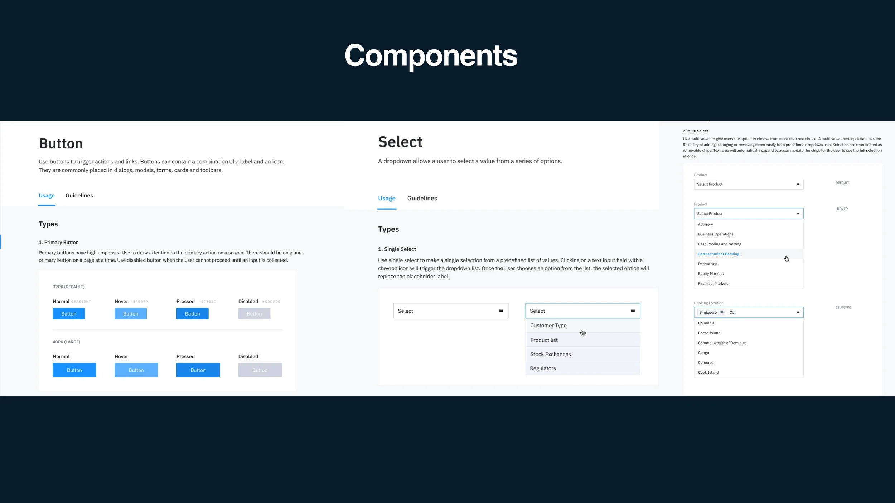
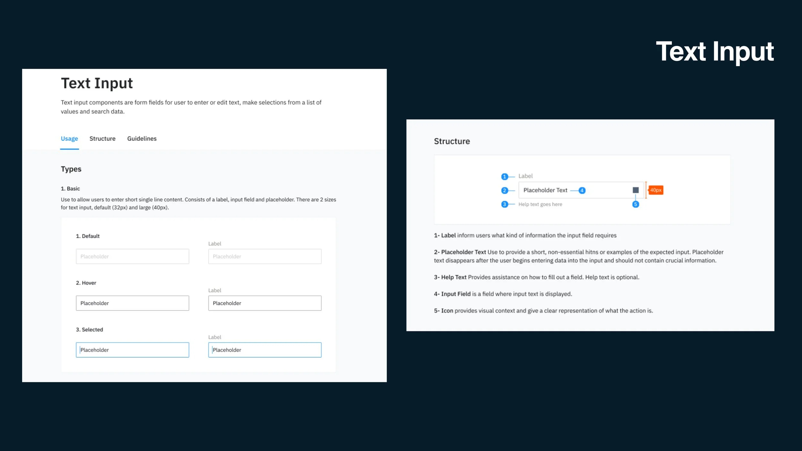
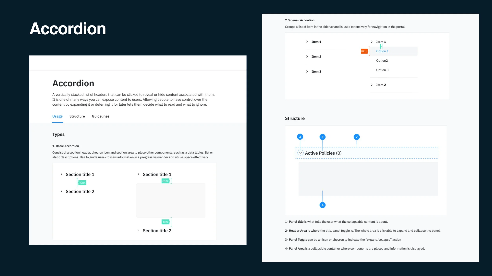
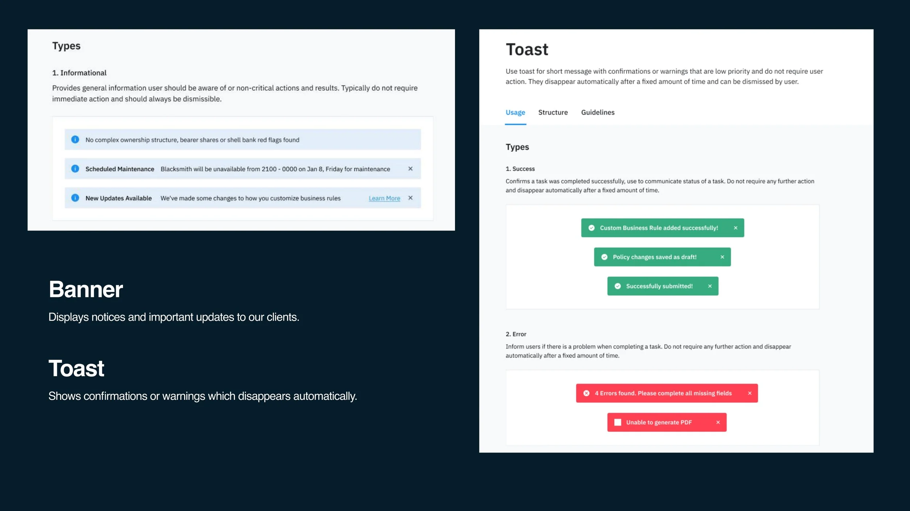
The core product revolves around three key screens: the Policy Home where banking compliance officers manage KYC policies, the CDD Requests flow for searching clients by BIC code, and the Customer Due Diligence File that aggregates risk data and evidence into a downloadable report.
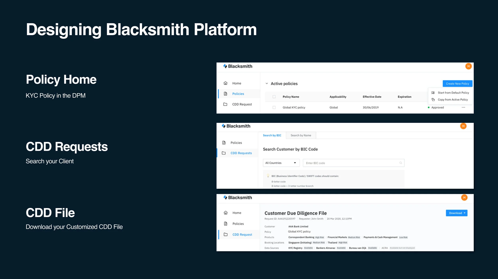
One of the key usability improvements was redesigning the password reset experience. I introduced real-time criteria validation with a dynamic strength indicator — guiding users step by step from Very Weak through to Strong before enabling the reset action.
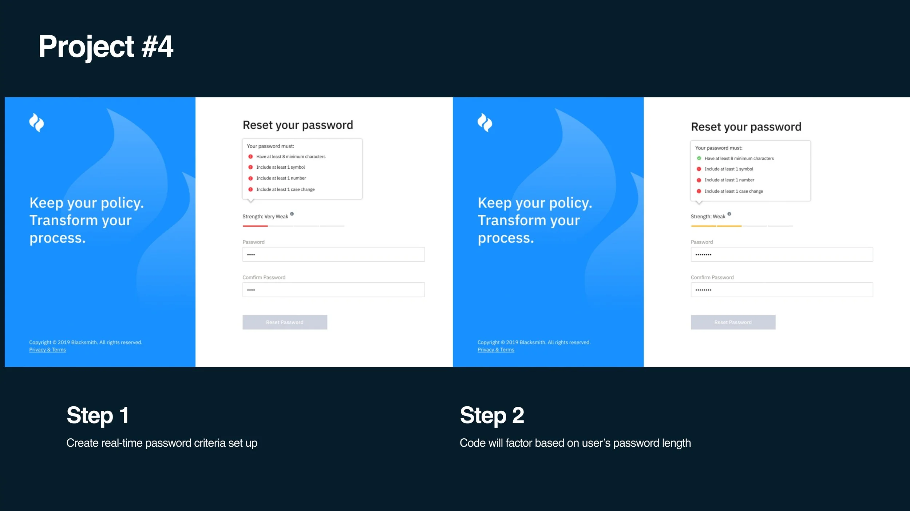
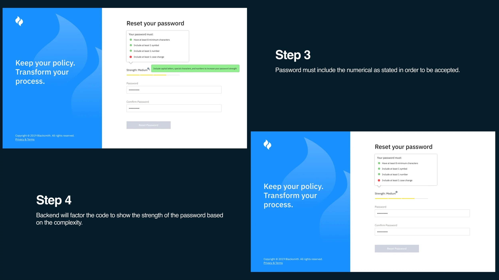
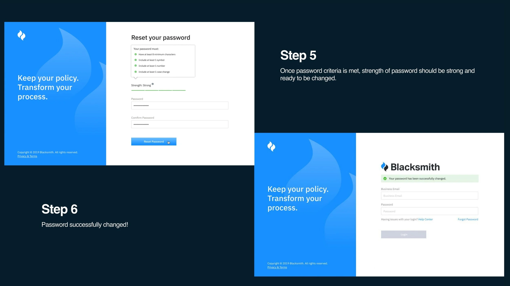
"Real-time feedback removes ambiguity — users know exactly what's missing before they even try to submit."
The Customer Due Diligence File is the platform's core output — a structured report surfacing client risk across Country Risk, Special Risk / Red Flags, and Product Risk. It pulls from trusted data sources (KYC Registry, Bankers Almanac, Bureau van Dijk, ACRA) and gives compliance officers clear actions and missing evidence flags.
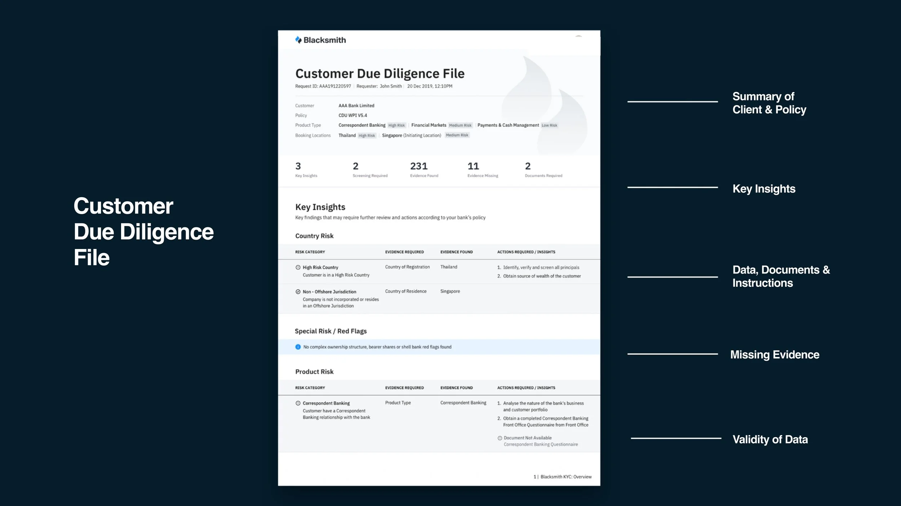
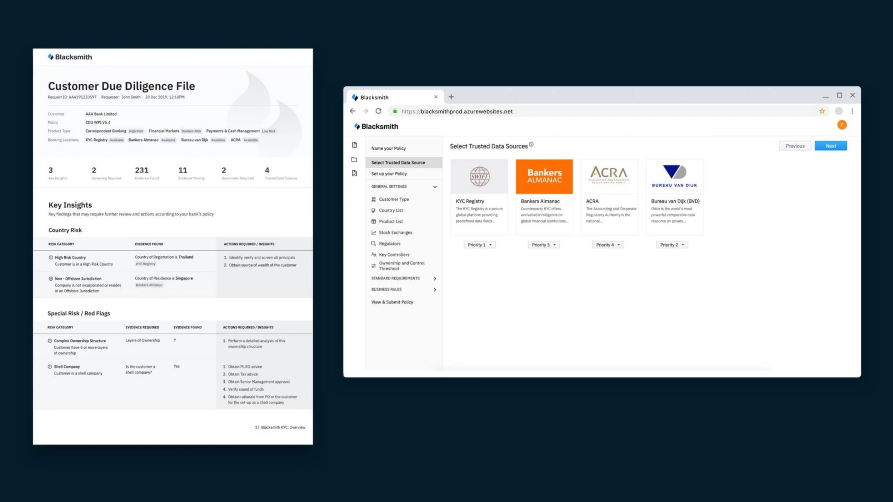